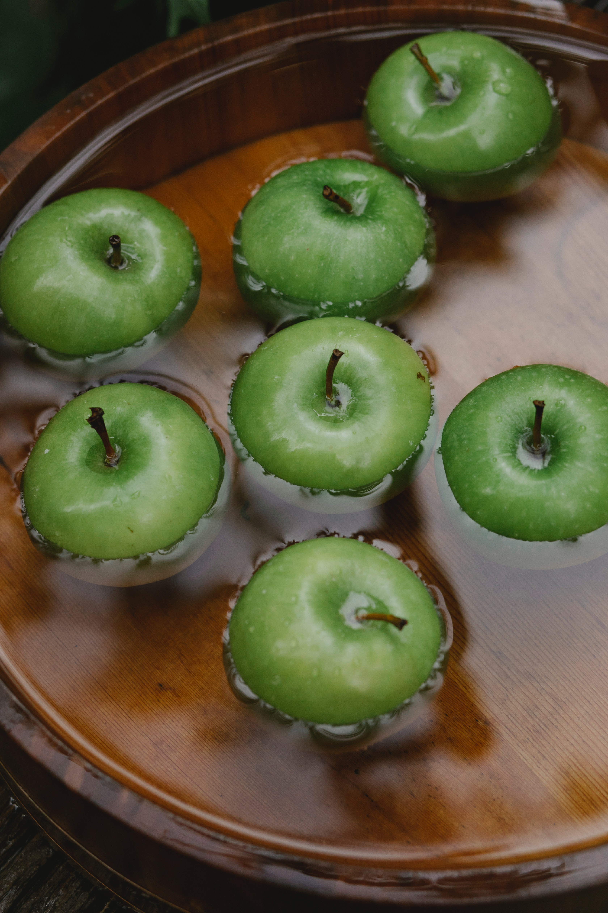
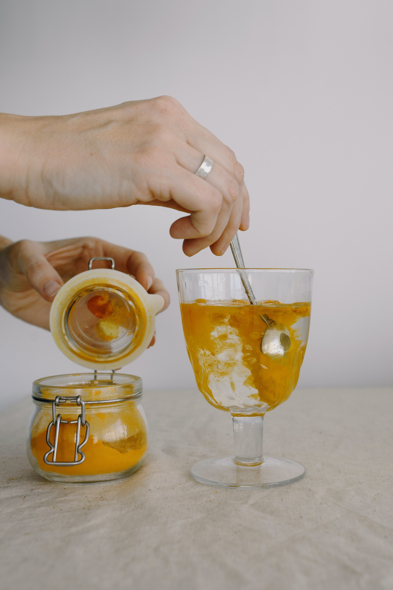
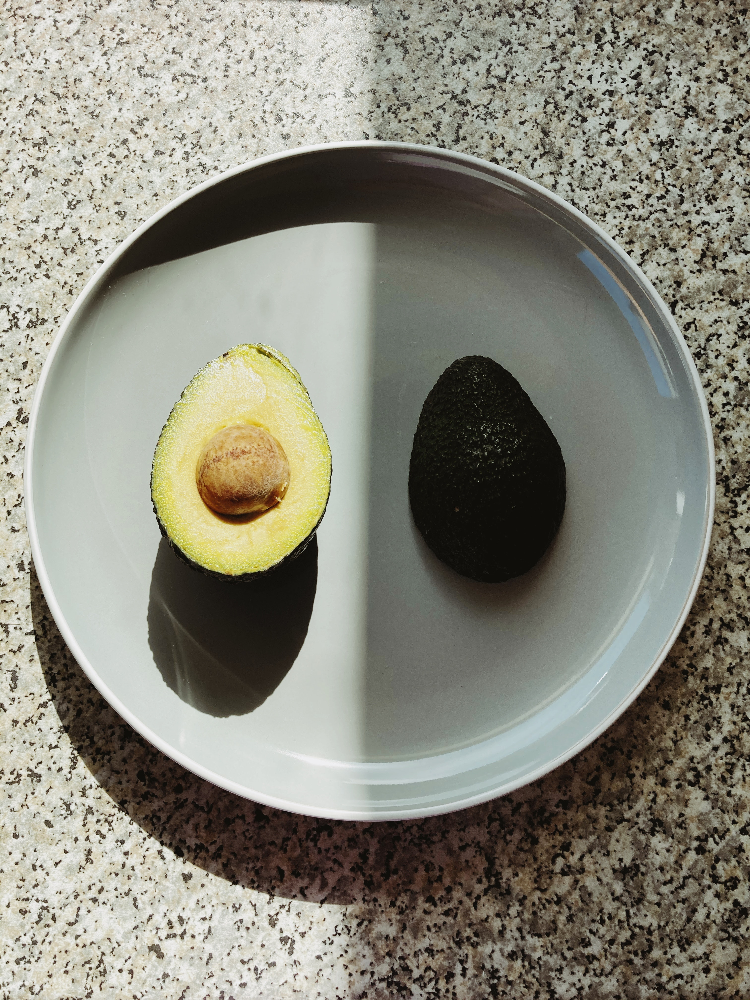

OVOLACTOVEGETARIANISMO
A dieta do ovolactovegetarianismo consiste no consumo de bens vegetais somado ao consumo de ovos e leite e seus respectivos derivados. Esse tipo de dieta é ideal para quem busca cortar a carne de sua dieta sem enfrentar dietas altamente restritivas.
A dieta do ovolactovegetarianismo consiste no consumo de bens vegetais somado ao consumo de ovos e leite e seus respectivos derivados. Esse tipo de dieta é ideal para quem busca cortar a carne de sua dieta sem enfrentar dietas altamente restritivas.

OVOVEGETARIANISMO
É um tipo de vegetarianismo e um estilo de vida. Como o próprio nome diz, ovovegetarianos são pessoas que seguem uma dieta vegetariana, de origem vegetal, e também consomem ovos e seus derivados, como, por exemplo, a maionese, e excluem outros alimentos de origem animal.
É um tipo de vegetarianismo e um estilo de vida. Como o próprio nome diz, ovovegetarianos são pessoas que seguem uma dieta vegetariana, de origem vegetal, e também consomem ovos e seus derivados, como, por exemplo, a maionese, e excluem outros alimentos de origem animal.

PLANT BASED
Ainda consomem certos produtos com matéria prima animal, como o consumo de carnes, ou que foram testados neles. Mas esse tipo de dieta é composto principalmente de alimentos vegetais integrais, in natura ou minimamente processados, como frutas, verduras e legumes.
Ainda consomem certos produtos com matéria prima animal, como o consumo de carnes, ou que foram testados neles. Mas esse tipo de dieta é composto principalmente de alimentos vegetais integrais, in natura ou minimamente processados, como frutas, verduras e legumes.

VEGETARIANISMO RESTRITO
O vegetarianismo estrito é aquele em que a pessoa não consome nada de origem animal, diferente do vegetarianismo tradicional, que ainda abre algumas exceções como o consumo de ovos e queijos, por exemplo.
O vegetarianismo estrito é aquele em que a pessoa não consome nada de origem animal, diferente do vegetarianismo tradicional, que ainda abre algumas exceções como o consumo de ovos e queijos, por exemplo.

LACTOVEGETARIANISMO
É um tipo de vegetarianismo caracterizado pela exclusão do consumo de qualquer tipo de carne e ovo, mas que mantém o consumo de laticínios. Essa dieta é relativamente comum por conta de sua flexibilidade.
É um tipo de vegetarianismo caracterizado pela exclusão do consumo de qualquer tipo de carne e ovo, mas que mantém o consumo de laticínios. Essa dieta é relativamente comum por conta de sua flexibilidade.